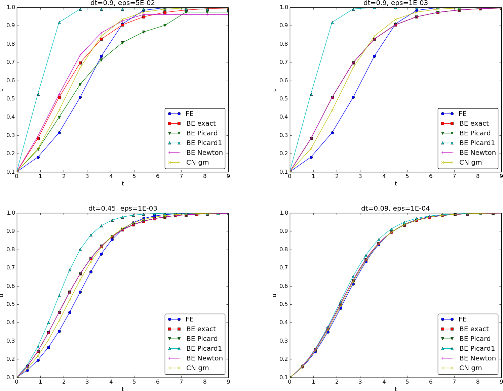

Introduction of basic concepts
Linear versus nonlinear equations
Algebraic equations
A linear, scalar, algebraic equation in \( x \) has the form $$ ax + b = 0,$$ for arbitrary real constants \( a \) and \( b \). The unknown is a number \( x \). All other algebraic equations, e.g., \( x^2 + ax + b = 0 \), are nonlinear. The typical feature in a nonlinear algebraic equation is that the unknown appears in products with itself, like \( x^2 \) or \( e^x = 1 + x +\half x^2 + \frac{1}{3!}x^3 + \cdots \).
We know how to solve a linear algebraic equation, \( x=-b/a \), but there are no general methods for finding the exact solutions of nonlinear algebraic equations, except for very special cases (quadratic equations are a primary example). A nonlinear algebraic equation may have no solution, one solution, or many solutions. The tools for solving nonlinear algebraic equations are iterative methods, where we construct a series of linear equations, which we know how to solve, and hope that the solutions of the linear equations converge to the solution of the nonlinear equation we want to solve. Typical methods for nonlinear algebraic equations are Newton's method, the Bisection method, and the Secant method.
Differential equations
The unknown in a differential equation is a function and not a number. In a linear differential equation, all terms involving the unknown functions are linear in the unknown functions or their derivatives. Linear here means that the unknown function, or a derivative of it, is multiplied by a number or a known function. All other differential equations are non-linear.
The easiest way to see if an equation is nonlinear, is to spot nonlinear terms where the unknown functions or their derivatives are multiplied by each other. For example, in $$ u^{\prime}(t) = -a(t)u(t) + b(t),$$ the terms involving the unknown function \( u \) are linear: \( u^{\prime} \) contains the derivative of the unknown function multiplied by unity, and \( au \) contains the unknown function multiplied by a known function. However, $$ u^{\prime}(t) = u(t)(1 - u(t)),$$ is nonlinear because of the term \( -u^2 \) where the unknown function is multiplied by itself. Also $$ \frac{\partial u}{\partial t} + u\frac{\partial u}{\partial x} = 0,$$ is nonlinear because of the term \( uu_x \) where the unknown function appears in a product with itself or one if its derivatives. (Note here that we use different notations for derivatives: \( u^{\prime} \) or \( du/dt \) for a function \( u(t) \) of one variable, \( \frac{\partial u}{\partial t} \) or \( u_t \) for a function of more than one variable.)
Another example of a nonlinear equation is $$ u^{\prime\prime} + \sin(u) =0,$$ because \( \sin(u) \) contains products of \( u \) if we expand the function in a Taylor series: $$ \sin(u) = u - \frac{1}{3} u^3 + \ldots$$
For example, the term \( T(u) = (\sin^2 t)u'(t) \) is linear because $$ \begin{align*} T(au_1 + bu_2) &= (\sin^2 t)(au_1(t) + b u_2(t))\\ & = a(\sin^2 t)u_1(t) + b(\sin^2 t)u_2(t)\\ & =aT(u_1) + bT(u_2)\tp \end{align*} $$ However, \( T(u)=\sin u \) is nonlinear because $$ T(au_1 + bu_2) = \sin (au_1 + bu_2) \neq a\sin u_1 + b\sin u_2\tp$$
A simple model problem
A series of forthcoming examples will explain how to tackle nonlinear differential equations with various techniques. We start with the (scaled) logistic equation as model problem: $$ \begin{equation} u^{\prime}(t) = u(t)(1 - u(t)) \tp \tag{1} \end{equation} $$ This is a nonlinear ordinary differential equation (ODE) which will be solved by different strategies in the following. Depending on the chosen time discretization of (1), the mathematical problem to be solved at every time level will either be a linear algebraic equation or a nonlinear algebraic equation. In the former case, the time discretization method transforms the nonlinear ODE into linear subproblems at each time level, and the solution is straightforward to find since linear algebraic equations are easy to solve. However, when the time discretization leads to nonlinear algebraic equations, we cannot (except in very rare cases) solve these without turning to approximate, iterative solution methods.
The next subsections introduce various methods for solving nonlinear differential equations, using (1) as model. We shall go through the following set cases:
- explicit time discretization methods (with no need to solve nonlinear algebraic equations)
- implicit Backward Euler discretization, leading to nonlinear algebraic equations solved by
- an exact analytical technique
- Picard iteration based on manual linearization
- a single Picard step
- Newton's method
- implicit Crank-Nicolson discretization and linearization via a geometric mean formula
Linearization by explicit time discretization
Time discretization methods are divided into explicit and implicit methods. Explicit methods lead to a closed-form formula for finding new values of the unknowns, while implicit methods give a linear or nonlinear system of equations that couples (all) the unknowns at a new time level. Here we shall demonstrate that explicit methods constitute an efficient way to deal with nonlinear differential equations.
The Forward Euler method is an explicit method. When applied to (1), sampled at \( t=t_n \), it results in $$ \frac{u^{n+1} - u^n}{\Delta t} = u^n(1 - u^n),$$ which is a linear algebraic equation for the unknown value \( u^{n+1} \) that we can easily solve: $$ u^{n+1} = u^n + \Delta t\,u^n(1 - u^n)\tp$$ The nonlinearity in the original equation poses in this case no difficulty in the discrete algebraic equation. Any other explicit scheme in time will also give only linear algebraic equations to solve. For example, a typical 2nd-order Runge-Kutta method for (1) leads to the following formulas: $$ \begin{align*} u^* &= u^n + \Delta t u^n(1 - u^n),\\ u^{n+1} &= u^n + \Delta t \half \left( u^n(1 - u^n) + u^*(1 - u^*)) \right)\tp \end{align*} $$ The first step is linear in the unknown \( u^* \). Then \( u^* \) is known in the next step, which is linear in the unknown \( u^{n+1} \) .
Exact solution of nonlinear algebraic equations
Switching to a Backward Euler scheme for (1), $$ \begin{equation} \frac{u^{n} - u^{n-1}}{\Delta t} = u^n(1 - u^n), \tag{2} \end{equation} $$ results in a nonlinear algebraic equation for the unknown value \( u^n \). The equation is of quadratic type: $$ \Delta t (u^n)^2 + (1-\Delta t)u^n - u^{n-1} = 0, $$ and may be solved exactly by the well-known formula for such equations. Before we do so, however, we will introduce a shorter, and often cleaner, notation for nonlinear algebraic equations at a given time level. The notation is inspired by the natural notation (i.e., variable names) used in a program, especially in more advanced partial differential equation problems. The unknown in the algebraic equation is denoted by \( u \), while \( u^{(1)} \) is the value of the unknown at the previous time level (in general, \( u^{(\ell)} \) is the value of the unknown \( \ell \) levels back in time). The notation will be frequently used in later sections. What is meant by \( u \) should be evident from the context: \( u \) may be 1) the exact solution of the ODE/PDE problem, 2) the numerical approximation to the exact solution, or 3) the unknown solution at a certain time level.
The quadratic equation for the unknown \( u^n \) in (2) can, with the new notation, be written $$ \begin{equation} F(u) = \Delta t u^2 + (1-\Delta t)u - u^{(1)} = 0\tp \tag{3} \end{equation} $$ The solution is readily found to be $$ \begin{equation} u = \frac{1}{2\Delta t} \left(-1+\Delta t \pm \sqrt{(1-\Delta t)^2 + 4\Delta t u^{(1)}}\right) \tp \tag{4} \end{equation} $$
Now we encounter a fundamental challenge with nonlinear
algebraic equations:
the equation may have more than one solution. How do we pick the right
solution? This is in general a hard problem.
In the present simple case, however, we can analyze the roots mathematically
and provide an answer. The idea is to expand the roots
in a series in \( \Delta t \) and truncate after the linear term since
the Backward Euler scheme will introduce an error proportional to
\( \Delta t \) anyway. Using sympy we find the following Taylor series
expansions of the roots:
>>> import sympy as sym
>>> dt, u_1, u = sym.symbols('dt u_1 u')
>>> r1, r2 = sym.solve(dt*u**2 + (1-dt)*u - u_1, u) # find roots
>>> r1
(dt - sqrt(dt**2 + 4*dt*u_1 - 2*dt + 1) - 1)/(2*dt)
>>> r2
(dt + sqrt(dt**2 + 4*dt*u_1 - 2*dt + 1) - 1)/(2*dt)
>>> print r1.series(dt, 0, 2) # 2 terms in dt, around dt=0
-1/dt + 1 - u_1 + dt*(u_1**2 - u_1) + O(dt**2)
>>> print r2.series(dt, 0, 2)
u_1 + dt*(-u_1**2 + u_1) + O(dt**2)
We see that the r1 root, corresponding to
a minus sign in front of the square root in
(4),
behaves as \( 1/\Delta t \) and will therefore
blow up as \( \Delta t\rightarrow 0 \)! Since we know that \( u \) takes on
finite values, actually it is less than or equal to 1,
only the r2 root is of relevance in this case: as \( \Delta t\rightarrow 0 \),
\( u\rightarrow u^{(1)} \), which is the expected result.
For those who are not well experienced with approximating mathematical formulas by series expansion, an alternative method of investigation is simply to compute the limits of the two roots as \( \Delta t\rightarrow 0 \) and see if a limit unreasonable:
>>> print r1.limit(dt, 0)
-oo
>>> print r2.limit(dt, 0)
u_1
Linearization
When the time integration of an ODE results in a nonlinear algebraic equation, we must normally find its solution by defining a sequence of linear equations and hope that the solutions of these linear equations converge to the desired solution of the nonlinear algebraic equation. Usually, this means solving the linear equation repeatedly in an iterative fashion. Alternatively, the nonlinear equation can sometimes be approximated by one linear equation, and consequently there is no need for iteration.
Constructing a linear equation from a nonlinear one requires linearization of each nonlinear term. This can be done manually as in Picard iteration, or fully algorithmically as in Newton's method. Examples will best illustrate how to linearize nonlinear problems.
Picard iteration
Let us write (3) in a more compact form $$ F(u) = au^2 + bu + c = 0,$$ with \( a=\Delta t \), \( b=1-\Delta t \), and \( c=-u^{(1)} \). Let \( u^{-} \) be an available approximation of the unknown \( u \). Then we can linearize the term \( u^2 \) simply by writing \( u^{-}u \). The resulting equation, \( \hat F(u)=0 \), is now linear and hence easy to solve: $$ F(u)\approx\hat F(u) = au^{-}u + bu + c = 0\tp$$ Since the equation \( \hat F=0 \) is only approximate, the solution \( u \) does not equal the exact solution \( \uex \) of the exact equation \( F(\uex)=0 \), but we can hope that \( u \) is closer to \( \uex \) than \( u^{-} \) is, and hence it makes sense to repeat the procedure, i.e., set \( u^{-}=u \) and solve \( \hat F(u)=0 \) again. There is no guarantee that \( u \) is closer to \( \uex \) than \( u^{-} \), but this approach has proven to be effective in a wide range of applications.
The idea of turning a nonlinear equation into a linear one by using an approximation \( u^{-} \) of \( u \) in nonlinear terms is a widely used approach that goes under many names: fixed-point iteration, the method of successive substitutions, nonlinear Richardson iteration, and Picard iteration. We will stick to the latter name.
Picard iteration for solving the nonlinear equation arising from the Backward Euler discretization of the logistic equation can be written as $$ u = -\frac{c}{au^{-} + b},\quad u^{-}\ \leftarrow\ u\tp$$ The \( \leftarrow \) symbols means assignment (we set \( u^{-} \) equal to the value of \( u \)). The iteration is started with the value of the unknown at the previous time level: \( u^{-}=u^{(1)} \).
Some people prefer an explicit iteration counter as superscript in the mathematical notation. Let \( u^k \) be the computed approximation to the solution in iteration \( k \). In iteration \( k+1 \) we want to solve $$ au^k u^{k+1} + bu^{k+1} + c = 0\quad\Rightarrow\quad u^{k+1} = -\frac{c}{au^k + b},\quad k=0,1,\ldots$$ Since we need to perform the iteration at every time level, the time level counter is often also included (recall that \( c=-u^{n-1} \)): $$ au^{n,k} u^{n,k+1} + bu^{n,k+1} - u^{n-1} = 0\quad\Rightarrow\quad u^{n,k+1} = \frac{u^{n-1}}{au^{n,k} + b},\quad k=0,1,\ldots,$$ with the start value \( u^{n,0}=u^{n-1} \) and the final converged value \( u^{n}=u^{n,k} \) for sufficiently large \( k \).
However, we will normally apply a mathematical notation in our final formulas that is as close as possible to what we aim to write in a computer code and then it becomes natural to use \( u \) and \( u^{-} \) instead of \( u^{k+1} \) and \( u^k \) or \( u^{n,k+1} \) and \( u^{n,k} \).
Stopping criteria
The iteration method can typically be terminated when the change in the solution is smaller than a tolerance \( \epsilon_u \): $$ |u - u^{-}| \leq\epsilon_u,$$ or when the residual in the equation is sufficiently small (\( \epsilon_r \)), $$ |F(u)|= |au^2+bu + c| < \epsilon_r\tp$$
A single Picard iteration
Instead of iterating until a stopping criterion is fulfilled, one may iterate a specific number of times. Just one Picard iteration is popular as this corresponds to the intuitive idea of approximating a nonlinear term like \( (u^n)^2 \) by \( u^{n-1}u^n \). This follows from the linearization \( u^{-}u^n \) and the initial choice of \( u^{-}=u^{n-1} \) at time level \( t_n \). In other words, a single Picard iteration corresponds to using the solution at the previous time level to linearize nonlinear terms. The resulting discretization becomes (using proper values for \( a \), \( b \), and \( c \)) $$ \begin{equation} \frac{u^{n} - u^{n-1}}{\Delta t} = u^n(1 - u^{n-1}), \tag{5} \end{equation} $$ which is a linear algebraic equation in the unknown \( u^n \), and therefore we can easily solve for \( u^n \), and there is no need for any alternative notation.
We shall later refer to the strategy of taking one Picard step, or equivalently, linearizing terms with use of the solution at the previous time step, as the Picard1 method. It is a widely used approach in science and technology, but with some limitations if \( \Delta t \) is not sufficiently small (as will be illustrated later).
Equation (5) does not correspond to a "pure" finite difference method where the equation is sampled at a point and derivatives replaced by differences (because the \( u^{n-1} \) term on the right-hand side must then be \( u^n \)). The best interpretation of the scheme (5) is a Backward Euler difference combined with a single (perhaps insufficient) Picard iteration at each time level, with the value at the previous time level as start for the Picard iteration.
Linearization by a geometric mean
We consider now a Crank-Nicolson discretization of (1). This means that the time derivative is approximated by a centered difference, $$ [D_t u = u(1-u)]^{n+\half},$$ written out as $$ \begin{equation} \frac{u^{n+1}-u^n}{\Delta t} = u^{n+\half} - (u^{n+\half})^2\tp \tag{6} \end{equation} $$ The term \( u^{n+\half} \) is normally approximated by an arithmetic mean, $$ u^{n+\half}\approx \half(u^n + u^{n+1}),$$ such that the scheme involves the unknown function only at the time levels where we actually compute it. The same arithmetic mean applied to the nonlinear term gives $$ (u^{n+\half})^2\approx \frac{1}{4}(u^n + u^{n+1})^2,$$ which is nonlinear in the unknown \( u^{n+1} \). However, using a geometric mean for \( (u^{n+\half})^2 \) is a way of linearizing the nonlinear term in (6): $$ (u^{n+\half})^2\approx u^nu^{n+1}\tp$$ Using an arithmetic mean on the linear \( u^{n+\frac{1}{2}} \) term in (6) and a geometric mean for the second term, results in a linearized equation for the unknown \( u^{n+1} \): $$ \frac{u^{n+1}-u^n}{\Delta t} = \half(u^n + u^{n+1}) - u^nu^{n+1},$$ which can readily be solved: $$ u^{n+1} = \frac{1 + \half\Delta t}{1+\Delta t u^n - \half\Delta t} u^n\tp$$ This scheme can be coded directly, and since there is no nonlinear algebraic equation to iterate over, we skip the simplified notation with \( u \) for \( u^{n+1} \) and \( u^{(1)} \) for \( u^n \). The technique with using a geometric average is an example of transforming a nonlinear algebraic equation to a linear one, without any need for iterations.
The geometric mean approximation is often very effective for linearizing quadratic nonlinearities. Both the arithmetic and geometric mean approximations have truncation errors of order \( \Delta t^2 \) and are therefore compatible with the truncation error \( \Oof{\Delta t^2} \) of the centered difference approximation for \( u^\prime \) in the Crank-Nicolson method.
Applying the operator notation for the means and finite differences, the linearized Crank-Nicolson scheme for the logistic equation can be compactly expressed as $$ [D_t u = \overline{u}^{t} - \overline{u^2}^{t,g}]^{n+\half}\tp$$
Newton's method
The Backward Euler scheme (2) for the logistic equation leads to a nonlinear algebraic equation (3). Now we write any nonlinear algebraic equation in the general and compact form $$ F(u) = 0\tp$$ Newton's method linearizes this equation by approximating \( F(u) \) with its Taylor series expansion around a computed value \( u^{-} \) and keeping only the linear part: $$ \begin{align*} F(u) &= F(u^{-}) + F^{\prime}(u^{-})(u - u^{-}) + {\half}F^{\prime\prime}(u^{-})(u-u^{-})^2 +\cdots\\ & \approx F(u^{-}) + F^{\prime}(u^{-})(u - u^{-}) = \hat F(u)\tp \end{align*} $$ The linear equation \( \hat F(u)=0 \) has the solution $$ u = u^{-} - \frac{F(u^{-})}{F^{\prime}(u^{-})}\tp$$ Expressed with an iteration index in the unknown, Newton's method takes on the more familiar mathematical form $$ u^{k+1} = u^k - \frac{F(u^k)}{F^{\prime}(u^k)},\quad k=0,1,\ldots$$
It can be shown that the error in iteration \( k+1 \) of Newton's method is the square of the error in iteration \( k \), a result referred to as quadratic convergence. This means that for small errors the method converges very fast, and in particular much faster than Picard iteration and other iteration methods. (The proof of this result is found in most textbooks on numerical analysis.) However, the quadratic convergence appears only if \( u^k \) is sufficiently close to the solution. Further away from the solution the method can easily converge very slowly or diverge. The reader is encouraged to do Problem 3: Experience the behavior of Newton's method to get a better understanding for the behavior of the method.
Application of Newton's method to the logistic equation discretized by the Backward Euler method is straightforward as we have $$ F(u) = au^2 + bu + c,\quad a=\Delta t,\ b = 1-\Delta t,\ c=-u^{(1)},$$ and then $$ F^{\prime}(u) = 2au + b\tp$$ The iteration method becomes $$ \begin{equation} u = u^{-} - \frac{a(u^{-})^2 + bu^{-} + c}{2au^{-} + b},\quad u^{-}\ \leftarrow u\tp \tag{7} \end{equation} $$ At each time level, we start the iteration by setting \( u^{-}=u^{(1)} \). Stopping criteria as listed for the Picard iteration can be used also for Newton's method.
An alternative mathematical form, where we write out \( a \), \( b \), and \( c \), and use a time level counter \( n \) and an iteration counter \( k \), takes the form $$ \begin{equation} u^{n,k+1} = u^{n,k} - \frac{\Delta t (u^{n,k})^2 + (1-\Delta t)u^{n,k} - u^{n-1}} {2\Delta t u^{n,k} + 1 - \Delta t},\quad u^{n,0}=u^{n-1},\quad k=0,1,\ldots \tag{8} \end{equation} $$ A program implementation is much closer to (7) than to (8), but the latter is better aligned with the established mathematical notation used in the literature.
Relaxation
One iteration in Newton's method or Picard iteration consists of solving a linear problem \( \hat F(u)=0 \). Sometimes convergence problems arise because the new solution \( u \) of \( \hat F(u)=0 \) is "too far away" from the previously computed solution \( u^{-} \). A remedy is to introduce a relaxation, meaning that we first solve \( \hat F(u^*)=0 \) for a suggested value \( u^* \) and then we take \( u \) as a weighted mean of what we had, \( u^{-} \), and what our linearized equation \( \hat F=0 \) suggests, \( u^* \): $$ u = \omega u^* + (1-\omega) u^{-}\tp$$ The parameter \( \omega \) is known as a relaxation parameter, and a choice \( \omega < 1 \) may prevent divergent iterations.
Relaxation in Newton's method can be directly incorporated in the basic iteration formula: $$ \begin{equation} u = u^{-} - \omega \frac{F(u^{-})}{F^{\prime}(u^{-})}\tp \tag{9} \end{equation} $$
Implementation and experiments
The program logistic.py contains implementations of all the methods described above. Below is an extract of the file showing how the Picard and Newton methods are implemented for a Backward Euler discretization of the logistic equation.
def BE_logistic(u0, dt, Nt, choice='Picard',
eps_r=1E-3, omega=1, max_iter=1000):
if choice == 'Picard1':
choice = 'Picard'
max_iter = 1
u = np.zeros(Nt+1)
iterations = []
u[0] = u0
for n in range(1, Nt+1):
a = dt
b = 1 - dt
c = -u[n-1]
if choice == 'Picard':
def F(u):
return a*u**2 + b*u + c
u_ = u[n-1]
k = 0
while abs(F(u_)) > eps_r and k < max_iter:
u_ = omega*(-c/(a*u_ + b)) + (1-omega)*u_
k += 1
u[n] = u_
iterations.append(k)
elif choice == 'Newton':
def F(u):
return a*u**2 + b*u + c
def dF(u):
return 2*a*u + b
u_ = u[n-1]
k = 0
while abs(F(u_)) > eps_r and k < max_iter:
u_ = u_ - F(u_)/dF(u_)
k += 1
u[n] = u_
iterations.append(k)
return u, iterations
The Crank-Nicolson method utilizing a linearization based on the geometric mean gives a simpler algorithm:
def CN_logistic(u0, dt, Nt):
u = np.zeros(Nt+1)
u[0] = u0
for n in range(0, Nt):
u[n+1] = (1 + 0.5*dt)/(1 + dt*u[n] - 0.5*dt)*u[n]
return u
We may run experiments with the model problem (1) and the different strategies for dealing with nonlinearities as described above. For a quite coarse time resolution, \( \Delta t=0.9 \), use of a tolerance \( \epsilon_r=0.1 \) in the stopping criterion introduces an iteration error, especially in the Picard iterations, that is visibly much larger than the time discretization error due to a large \( \Delta t \). This is illustrated by comparing the upper two plots in Figure 1. The one to the right has a stricter tolerance \( \epsilon = 10^{-3} \), which leads to all the curves corresponding to Picard and Newton iteration to be on top of each other (and no changes can be visually observed by reducing \( \epsilon_r \) further). The reason why Newton's method does much better than Picard iteration in the upper left plot is that Newton's method with one step comes far below the \( \epsilon_r \) tolerance, while the Picard iteration needs on average 7 iterations to bring the residual down to \( \epsilon_r=10^{-1} \), which gives insufficient accuracy in the solution of the nonlinear equation. It is obvious that the Picard1 method gives significant errors in addition to the time discretization unless the time step is as small as in the lower right plot.
The BE exact curve corresponds to using the exact solution of the quadratic equation at each time level, so this curve is only affected by the Backward Euler time discretization. The CN gm curve corresponds to the theoretically more accurate Crank-Nicolson discretization, combined with a geometric mean for linearization. This curve appears as more accurate, especially if we take the plot in the lower right with a small \( \Delta t \) and an appropriately small \( \epsilon_r \) value as the exact curve.
When it comes to the need for iterations, Figure 2 displays the number of iterations required at each time level for Newton's method and Picard iteration. The smaller \( \Delta t \) is, the better starting value we have for the iteration, and the faster the convergence is. With \( \Delta t = 0.9 \) Picard iteration requires on average 32 iterations per time step, but this number is dramatically reduced as \( \Delta t \) is reduced.
However, introducing relaxation and a parameter \( \omega=0.8 \) immediately reduces the average of 32 to 7, indicating that for the large \( \Delta t=0.9 \), Picard iteration takes too long steps. An approximately optimal value for \( \omega \) in this case is 0.5, which results in an average of only 2 iterations! Even more dramatic impact of \( \omega \) appears when \( \Delta t = 1 \): Picard iteration does not convergence in 1000 iterations, but \( \omega=0.5 \) again brings the average number of iterations down to 2.
Figure 1: Impact of solution strategy and time step length on the solution.

Figure 2: Comparison of the number of iterations at various time levels for Picard and Newton iteration.

Remark. The simple Crank-Nicolson method with a geometric mean for the quadratic nonlinearity gives visually more accurate solutions than the Backward Euler discretization. Even with a tolerance of \( \epsilon_r=10^{-3} \), all the methods for treating the nonlinearities in the Backward Euler discretization give graphs that cannot be distinguished. So for accuracy in this problem, the time discretization is much more crucial than \( \epsilon_r \). Ideally, one should estimate the error in the time discretization, as the solution progresses, and set \( \epsilon_r \) accordingly.
Generalization to a general nonlinear ODE
Let us see how the various methods in the previous sections can be applied to the more generic model $$ \begin{equation} u^{\prime} = f(u, t), \tag{10} \end{equation} $$ where \( f \) is a nonlinear function of \( u \).
Explicit time discretization
Explicit ODE methods like the Forward Euler scheme, Runge-Kutta methods, Adams-Bashforth methods all evaluate \( f \) at time levels where \( u \) is already computed, so nonlinearities in \( f \) do not pose any difficulties.
Backward Euler discretization
Approximating \( u^{\prime} \) by a backward difference leads to a Backward Euler scheme, which can be written as $$ F(u^n) = u^{n} - \Delta t\, f(u^n, t_n) - u^{n-1}=0,$$ or alternatively $$ F(u) = u - \Delta t\, f(u, t_n) - u^{(1)} = 0\tp$$ A simple Picard iteration, not knowing anything about the nonlinear structure of \( f \), must approximate \( f(u,t_n) \) by \( f(u^{-},t_n) \): $$ \hat F(u) = u - \Delta t\, f(u^{-},t_n) - u^{(1)}\tp$$ The iteration starts with \( u^{-}=u^{(1)} \) and proceeds with repeating $$ u^* = \Delta t\, f(u^{-},t_n) + u^{(1)},\quad u = \omega u^* + (1-\omega)u^{-}, \quad u^{-}\ \leftarrow\ u,$$ until a stopping criterion is fulfilled.
Explicit treatment of \( f \) usually means stricter conditions on \( \Delta t \) to achieve stability of time discretization schemes. The same applies to iteration techniques for nonlinear algebraic equations: the "less" we linearize \( f \) (i.e., the more we keep of \( u \) in the original formula), the faster the convergence may be.
We may say that \( f(u,t)=u^3 \) is treated explicitly if we evaluate \( f \) as \( (u^{-})^3 \), partially implicit if we linearize as \( (u^{-})^2u \) and fully implicit if we represent \( f \) by \( u^3 \). (Of course, the fully implicit representation will require further linearization, but with \( f(u,t)=u^2 \) a fully implicit treatment is possible if the resulting quadratic equation is solved with a formula.)
For the ODE \( u^{\prime}=-u^3 \) with \( f(u,t)=-u^3 \) and coarse time resolution \( \Delta t = 0.4 \), Picard iteration with \( (u^{-})^2u \) requires 8 iterations with \( \epsilon_r = 10^{-3} \) for the first time step, while \( (u^{-})^3 \) leads to 22 iterations. After about 10 time steps both approaches are down to about 2 iterations per time step, but this example shows a potential of treating \( f \) more implicitly.
A trick to treat \( f \) implicitly in Picard iteration is to evaluate it as \( f(u^{-},t)u/u^{-} \). For a polynomial \( f \), \( f(u,t)=u^m \), this corresponds to \( (u^{-})^{m-1}u \). Sometimes this more implicit treatment has no effect, as with \( f(u,t)=\exp(-u) \) and \( f(u,t)=\ln (1+u) \), but with \( f(u,t)=\sin(2(u+1)) \), the \( f(u^{-},t)u/u^{-} \) trick leads to 7, 9, and 11 iterations during the first three steps, while \( f(u^{-},t) \) demands 17, 21, and 20 iterations. (Experiments can be done with the code ODE_Picard_tricks.py.)
Newton's method applied to a Backward Euler discretization of \( u^{\prime}=f(u,t) \) requires the computation of the derivative $$ F^{\prime}(u) = 1 - \Delta t\frac{\partial f}{\partial u}(u,t_n)\tp$$ Starting with the solution at the previous time level, \( u^{-}=u^{(1)} \), we can just use the standard formula $$ \begin{equation} u = u^{-} - \omega \frac{F(u^{-})}{F^{\prime}(u^{-})} = u^{-} - \omega \frac{u^{-} - \Delta t\, f(u^{-}, t_n) - u^{(1)}}{1 - \Delta t \frac{\partial}{\partial u}f(u^{-},t_n)} \tp \tag{11} \end{equation} $$
Crank-Nicolson discretization
The standard Crank-Nicolson scheme with arithmetic mean approximation of \( f \) takes the form $$ \frac{u^{n+1} - u^n}{\Delta t} = \half(f(u^{n+1}, t_{n+1}) + f(u^n, t_n))\tp$$ We can write the scheme as a nonlinear algebraic equation $$ \begin{equation} F(u) = u - u^{(1)} - \Delta t{\half}f(u,t_{n+1}) - \Delta t{\half}f(u^{(1)},t_{n}) = 0\tp \tag{12} \end{equation} $$ A Picard iteration scheme must in general employ the linearization $$ \hat F(u) = u - u^{(1)} - \Delta t{\half}f(u^{-},t_{n+1}) - \Delta t{\half}f(u^{(1)},t_{n}),$$ while Newton's method can apply the general formula (11) with \( F(u) \) given in (12) and $$ F^{\prime}(u)= 1 - \half\Delta t\frac{\partial f}{\partial u}(u,t_{n+1})\tp$$
Systems of ODEs
We may write a system of ODEs $$ \begin{align*} \frac{d}{dt}u_0(t) &= f_0(u_0(t),u_1(t),\ldots,u_N(t),t),\\ \frac{d}{dt}u_1(t) &= f_1(u_0(t),u_1(t),\ldots,u_N(t),t),\\ &\vdots\\ \frac{d}{dt}u_m(t) &= f_m(u_0(t),u_1(t),\ldots,u_N(t),t), \end{align*} $$ as $$ \begin{equation} u^{\prime} = f(u,t),\quad u(0)=U_0, \tag{13} \end{equation} $$ if we interpret \( u \) as a vector \( u=(u_0(t),u_1(t),\ldots,u_N(t)) \) and \( f \) as a vector function with components \( (f_0(u,t),f_1(u,t),\ldots,f_N(u,t)) \).
Most solution methods for scalar ODEs, including the Forward and Backward Euler schemes and the Crank-Nicolson method, generalize in a straightforward way to systems of ODEs simply by using vector arithmetics instead of scalar arithmetics, which corresponds to applying the scalar scheme to each component of the system. For example, here is a backward difference scheme applied to each component, $$ \begin{align*} \frac{u_0^n- u_0^{n-1}}{\Delta t} &= f_0(u^n,t_n),\\ \frac{u_1^n- u_1^{n-1}}{\Delta t} &= f_1(u^n,t_n),\\ &\vdots\\ \frac{u_N^n- u_N^{n-1}}{\Delta t} &= f_N(u^n,t_n), \end{align*} $$ which can be written more compactly in vector form as $$ \frac{u^n- u^{n-1}}{\Delta t} = f(u^n,t_n)\tp$$ This is a system of algebraic equations, $$ u^n - \Delta t\,f(u^n,t_n) - u^{n-1}=0,$$ or written out $$ \begin{align*} u_0^n - \Delta t\, f_0(u^n,t_n) - u_0^{n-1} &= 0,\\ &\vdots\\ u_N^n - \Delta t\, f_N(u^n,t_n) - u_N^{n-1} &= 0\tp \end{align*} $$
Example
We shall address the \( 2\times 2 \) ODE system for oscillations of a pendulum subject to gravity and air drag. The system can be written as $$ \begin{align} \dot\omega &= -\sin\theta -\beta \omega |\omega|, \tag{14}\\ \dot\theta &= \omega, \tag{15} \end{align} $$ where \( \beta \) is a dimensionless parameter (this is the scaled, dimensionless version of the original, physical model). The unknown components of the system are the angle \( \theta(t) \) and the angular velocity \( \omega(t) \). We introduce \( u_0=\omega \) and \( u_1=\theta \), which leads to $$ \begin{align*} u_0^{\prime} = f_0(u,t) &= -\sin u_1 - \beta u_0|u_0|,\\ u_1^{\prime} = f_1(u,t) &= u_0\tp \end{align*} $$ A Crank-Nicolson scheme reads $$ \begin{align} \frac{u_0^{n+1}-u_0^{n}}{\Delta t} &= -\sin u_1^{n+\frac{1}{2}} - \beta u_0^{n+\frac{1}{2}}|u_0^{n+\frac{1}{2}}|\nonumber\\ & \approx -\sin\left(\frac{1}{2}(u_1^{n+1} + u_1n)\right) - \beta\frac{1}{4} (u_0^{n+1} + u_0^n)|u_0^{n+1}+u_0^n|, \tag{16}\\ \frac{u_1^{n+1}-u_1^n}{\Delta t} &= u_0^{n+\frac{1}{2}}\approx \frac{1}{2} (u_0^{n+1}+u_0^n)\tp \tag{17} \end{align} $$ This is a coupled system of two nonlinear algebraic equations in two unknowns \( u_0^{n+1} \) and \( u_1^{n+1} \).
Using the notation \( u_0 \) and \( u_1 \) for the unknowns \( u_0^{n+1} \) and \( u_1^{n+1} \) in this system, writing \( u_0^{(1)} \) and \( u_1^{(1)} \) for the previous values \( u_0^n \) and \( u_1^n \), multiplying by \( \Delta t \) and moving the terms to the left-hand sides, gives $$ \begin{align} u_0 - u_0^{(1)} + \Delta t\,\sin\left(\frac{1}{2}(u_1 + u_1^{(1)})\right) + \frac{1}{4}\Delta t\beta (u_0 + u_0^{(1)})|u_0 + u_0^{(1)}| &=0, \tag{18}\\ u_1 - u_1^{(1)} -\frac{1}{2}\Delta t(u_0 + u_0^{(1)}) &=0\tp \tag{19} \end{align} $$ Obviously, we have a need for solving systems of nonlinear algebraic equations, which is the topic of the next section.